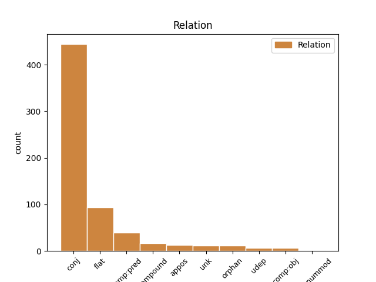
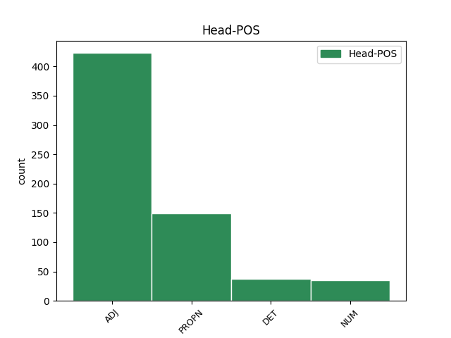
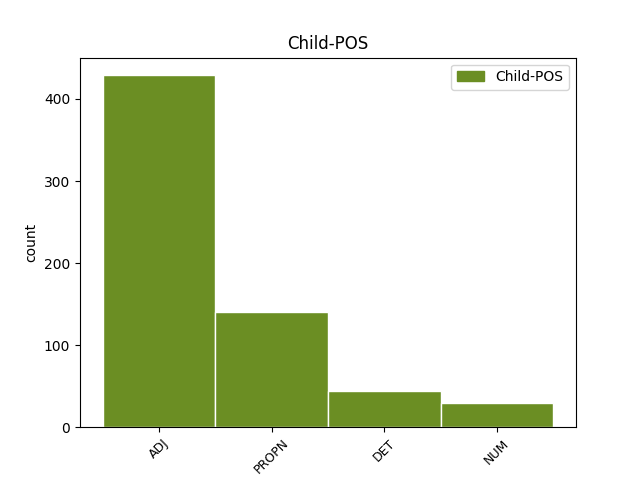

Distribution of features within this leaf



Agreement Rules sorted by frequency.
- When the dependent token is the conjunct(conj) of the head token, and the head token is ADJ and the dependent token is ADJ.
1 " _ _ _ _ 0 _ _ _
2 Na _ _ _ _ 0 _ _ _
3 to _ _ _ _ 0 _ _ _
4 je _ _ _ _ 0 _ _ _
5 příliš _ _ _ _ 0 _ _ _
6 slabý slabý ADJ AAMS1----1A---- Animacy=Anim|Case=Nom|Degree=Pos|Gender=Masc|Number=Sing|Polarity=Pos 0 _ _ _
7 a _ _ _ _ 0 _ _ _
8 křehký křehký ADJ AAMS1----1A---- Animacy=Anim|Case=Nom|Degree=Pos|Gender=Masc|Number=Sing|Polarity=Pos 6 conj _ SpaceAfter=No
9 , _ _ _ _ 0 _ _ _
10 " _ _ _ _ 0 _ _ _
11 stěžovala _ _ _ _ 0 _ _ _
12 si _ _ _ _ 0 _ _ _
13 . _ _ _ _ 0 _ _ _
1 Cadik Cadik PROPN NNMS1-----A---- Animacy=Anim|Case=Nom|Gender=Masc|NameType=Giv|Number=Sing|Polarity=Pos 0 _ _ _
2 rabi _ _ _ _ 0 _ _ _
3 Elimelech Elimelech PROPN NNMS1-----A---- Animacy=Anim|Case=Nom|Gender=Masc|NameType=Sur|Number=Sing|Polarity=Pos 1 flat _ _
4 z _ _ _ _ 0 _ _ _
5 Lyžeňska _ _ _ _ 0 _ _ _
6 jednou _ _ _ _ 0 _ _ _
7 řekl _ _ _ _ 0 _ _ _
8 svým _ _ _ _ 0 _ _ _
9 žákům _ _ _ _ 0 _ _ _
10 : _ _ _ _ 0 _ _ _
1 Kořeny _ _ _ _ 0 _ _ _
2 těchto _ _ _ _ 0 _ _ _
3 příběhů _ _ _ _ 0 _ _ _
4 sahají _ _ _ _ 0 _ _ _
5 až _ _ _ _ 0 _ _ _
6 k _ _ _ _ 0 _ _ _
7 předbudhistickým _ _ _ _ 0 _ _ _
8 časům _ _ _ _ 0 _ _ _
9 Indie _ _ _ _ 0 _ _ _
10 , _ _ _ _ 0 _ _ _
11 starověké _ _ _ _ 0 _ _ _
12 Číny Čína PROPN NNFS2-----A---- Case=Gen|Gender=Fem|NameType=Geo|Number=Sing|Polarity=Pos 0 _ _ _
13 , _ _ _ _ 0 _ _ _
14 Japonska Japonsko PROPN NNNS2-----A---- Case=Gen|Gender=Neut|Number=Sing|Polarity=Pos 12 conj _ _
15 a _ _ _ _ 0 _ _ _
16 k _ _ _ _ 0 _ _ _
17 zemím _ _ _ _ 0 _ _ _
18 raného _ _ _ _ 0 _ _ _
19 islámu _ _ _ _ 0 _ _ _
20 a _ _ _ _ 0 _ _ _
21 židovství _ _ _ _ 0 _ _ _
22 . _ _ _ _ 0 _ _ _
1 On _ _ _ _ 0 _ _ _
2 je _ _ _ _ 0 _ _ _
3 pak _ _ _ _ 0 _ _ _
4 ale _ _ _ _ 0 _ _ _
5 neposedný _ _ _ _ 0 _ _ _
6 , _ _ _ _ 0 _ _ _
7 i _ _ _ _ 0 _ _ _
8 když _ _ _ _ 0 _ _ _
9 to ten DET PDNS4---------- Case=Acc|Gender=Neut|Number=Sing|PronType=Dem 0 _ _ _
10 ještě _ _ _ _ 0 _ _ _
11 nemá _ _ _ _ 0 _ _ _
12 hotové hotový ADJ AANS4----1A---- Case=Acc|Degree=Pos|Gender=Neut|Number=Sing|Polarity=Pos 9 comp:pred _ SpaceAfter=No
13 , _ _ _ _ 0 _ _ _
14 chce _ _ _ _ 0 _ _ _
15 se _ _ _ _ 0 _ _ _
16 dívat _ _ _ _ 0 _ _ _
17 na _ _ _ _ 0 _ _ _
18 televizi _ _ _ _ 0 _ _ _
19 nebo _ _ _ _ 0 _ _ _
20 hrát _ _ _ _ 0 _ _ _
21 hry _ _ _ _ 0 _ _ _
22 na _ _ _ _ 0 _ _ _
23 počítači _ _ _ _ 0 _ _ _
24 a _ _ _ _ 0 _ _ _
25 pokaždé _ _ _ _ 0 _ _ _
26 se _ _ _ _ 0 _ _ _
27 dohadujeme _ _ _ _ 0 _ _ _
28 , _ _ _ _ 0 _ _ _
29 a _ _ _ _ 0 _ _ _
30 proto _ _ _ _ 0 _ _ _
31 jsme _ _ _ _ 0 _ _ _
32 tady _ _ _ _ 0 _ _ _
33 . _ _ _ _ 0 _ _ _
34 " _ _ _ _ 0 _ _ _
1 Celé _ _ _ _ 0 _ _ _
2 měsíce _ _ _ _ 0 _ _ _
3 procházel _ _ _ _ 0 _ _ _
4 liduprázdnými _ _ _ _ 0 _ _ _
5 horskými _ _ _ _ 0 _ _ _
6 oblastmi _ _ _ _ 0 _ _ _
7 , _ _ _ _ 0 _ _ _
8 razil _ _ _ _ 0 _ _ _
9 si _ _ _ _ 0 _ _ _
10 cestu _ _ _ _ 0 _ _ _
11 sněhem _ _ _ _ 0 _ _ _
12 a _ _ _ _ 0 _ _ _
13 ledem _ _ _ _ 0 _ _ _
14 , _ _ _ _ 0 _ _ _
15 až _ _ _ _ 0 _ _ _
16 konečně _ _ _ _ 0 _ _ _
17 ve _ _ _ _ 0 _ _ _
18 výšce _ _ _ _ 0 _ _ _
19 pěti pět NUM Cn-P2---------- Case=Gen|Number=Plur|NumForm=Word|NumType=Card 0 _ _ _
20 tisíc tisíc NUM Cl-S2---------- Case=Gen|Number=Sing|NumForm=Word|NumType=Card|NumValue=1,2,3 19 compound _ _
21 narazil _ _ _ _ 0 _ _ _
22 na _ _ _ _ 0 _ _ _
23 jeskyni _ _ _ _ 0 _ _ _
24 , _ _ _ _ 0 _ _ _
25 ve _ _ _ _ 0 _ _ _
26 které _ _ _ _ 0 _ _ _
27 přebýval _ _ _ _ 0 _ _ _
28 polonahý _ _ _ _ 0 _ _ _
29 poustevník _ _ _ _ 0 _ _ _
30 . _ _ _ _ 0 _ _ _
1 Kriticky _ _ _ _ 0 _ _ _
2 zkoumal _ _ _ _ 0 _ _ _
3 toho ten DET PDMS4---------- Animacy=Anim|Case=Acc|Gender=Masc|Number=Sing|PronType=Dem 0 _ _ _
4 a _ _ _ _ 0 _ _ _
5 onoho onen DET PDMS4---------- Animacy=Anim|Case=Acc|Gender=Masc|Number=Sing|PronType=Dem 3 conj _ SpaceAfter=No
6 , _ _ _ _ 0 _ _ _
7 ale _ _ _ _ 0 _ _ _
8 pořád _ _ _ _ 0 _ _ _
9 se _ _ _ _ 0 _ _ _
10 mu _ _ _ _ 0 _ _ _
11 něco _ _ _ _ 0 _ _ _
12 nezdálo _ _ _ _ 0 _ _ _
13 , _ _ _ _ 0 _ _ _
14 až _ _ _ _ 0 _ _ _
15 jeho _ _ _ _ 0 _ _ _
16 zrak _ _ _ _ 0 _ _ _
17 padl _ _ _ _ 0 _ _ _
18 na _ _ _ _ 0 _ _ _
19 obrovského _ _ _ _ 0 _ _ _
20 mladíka _ _ _ _ 0 _ _ _
21 . _ _ _ _ 0 _ _ _
1 Ode _ _ _ _ 0 _ _ _
2 dne _ _ _ _ 0 _ _ _
3 , _ _ _ _ 0 _ _ _
4 kdy _ _ _ _ 0 _ _ _
5 Láďova _ _ _ _ 0 _ _ _
6 maminka _ _ _ _ 0 _ _ _
7 nastoupila _ _ _ _ 0 _ _ _
8 do _ _ _ _ 0 _ _ _
9 práce _ _ _ _ 0 _ _ _
10 , _ _ _ _ 0 _ _ _
11 život _ _ _ _ 0 _ _ _
12 sklouzl _ _ _ _ 0 _ _ _
13 do _ _ _ _ 0 _ _ _
14 normálních normální ADJ AAFP2----1A---- Case=Gen|Degree=Pos|Gender=Fem|Number=Plur|Polarity=Pos 0 _ _ _
15 , _ _ _ _ 0 _ _ _
16 běžných běžný ADJ AAFP2----1A---- Case=Gen|Degree=Pos|Gender=Fem|Number=Plur|Polarity=Pos 14 appos _ _
17 kolejí _ _ _ _ 0 _ _ _
18 . _ _ _ _ 0 _ _ _
1 Došel _ _ _ _ 0 _ _ _
2 k _ _ _ _ 0 _ _ _
3 názoru _ _ _ _ 0 _ _ _
4 , _ _ _ _ 0 _ _ _
5 že _ _ _ _ 0 _ _ _
6 už _ _ _ _ 0 _ _ _
7 investoval _ _ _ _ 0 _ _ _
8 dost _ _ _ _ 0 _ _ _
9 peněz _ _ _ _ 0 _ _ _
10 , _ _ _ _ 0 _ _ _
11 které který DET P4IP1---------- Animacy=Inan|Case=Nom|Gender=Masc|Number=Plur|PronType=Int,Rel 0 _ _ _
12 se _ _ _ _ 0 _ _ _
13 mohou _ _ _ _ 0 _ _ _
14 rozmnožovat _ _ _ _ 0 _ _ _
15 takřka _ _ _ _ 0 _ _ _
16 samy sám DET PLIP1---------- Animacy=Inan|Case=Nom|Gender=Masc|Number=Plur|PronType=Emp 11 comp:pred _ _
17 od _ _ _ _ 0 _ _ _
18 sebe _ _ _ _ 0 _ _ _
19 . _ _ _ _ 0 _ _ _
1 " _ _ _ _ 0 _ _ _
2 To _ _ _ _ 0 _ _ _
3 je _ _ _ _ 0 _ _ _
4 všechno _ _ _ _ 0 _ _ _
5 pravda _ _ _ _ 0 _ _ _
6 , _ _ _ _ 0 _ _ _
7 " _ _ _ _ 0 _ _ _
8 odpověděl _ _ _ _ 0 _ _ _
9 kupec _ _ _ _ 0 _ _ _
10 , _ _ _ _ 0 _ _ _
11 " _ _ _ _ 0 _ _ _
12 ale _ _ _ _ 0 _ _ _
13 nemůžu _ _ _ _ 0 _ _ _
14 podstoupit _ _ _ _ 0 _ _ _
15 riziko _ _ _ _ 0 _ _ _
16 , _ _ _ _ 0 _ _ _
17 že _ _ _ _ 0 _ _ _
18 mě _ _ _ _ 0 _ _ _
19 někdy _ _ _ _ 0 _ _ _
20 přepadne _ _ _ _ 0 _ _ _
21 dvacet dvacet NUM Cn-S1---------- Case=Nom|Number=Sing|NumForm=Word|NumType=Card 0 _ _ _
22 nebo _ _ _ _ 0 _ _ _
23 třicet třicet NUM Cn-S1---------- Case=Nom|Number=Sing|NumForm=Word|NumType=Card 21 conj _ _
24 chlapů _ _ _ _ 0 _ _ _
25 a _ _ _ _ 0 _ _ _
26 bude _ _ _ _ 0 _ _ _
27 mě _ _ _ _ 0 _ _ _
28 chránit _ _ _ _ 0 _ _ _
29 ten _ _ _ _ 0 _ _ _
30 , _ _ _ _ 0 _ _ _
31 kdo _ _ _ _ 0 _ _ _
32 reaguje _ _ _ _ 0 _ _ _
33 až _ _ _ _ 0 _ _ _
34 na _ _ _ _ 0 _ _ _
35 čtyřicátého _ _ _ _ 0 _ _ _
36 ! _ _ _ _ 0 _ _ _
37 " _ _ _ _ 0 _ _ _
1 Východisko _ _ _ _ 0 _ _ _
2 našel _ _ _ _ 0 _ _ _
3 Havlena Havlena PROPN NNMS1-----A---- Animacy=Anim|Case=Nom|Gender=Masc|NameType=Sur|Number=Sing|Polarity=Pos 0 _ _ _
4 brzy _ _ _ _ 0 _ _ _
5 sám sám DET PLMS1---------- Animacy=Anim|Case=Nom|Gender=Masc|Number=Sing|PronType=Emp 3 comp:pred _ SpaceAfter=No
6 : _ _ _ _ 0 _ _ _
7 začal _ _ _ _ 0 _ _ _
8 intenzívně _ _ _ _ 0 _ _ _
9 pracovat _ _ _ _ 0 _ _ _
10 na _ _ _ _ 0 _ _ _
11 drobných _ _ _ _ 0 _ _ _
12 úpravách _ _ _ _ 0 _ _ _
13 domku _ _ _ _ 0 _ _ _
14 . _ _ _ _ 0 _ _ _
1 Široká _ _ _ _ 0 _ _ _
2 silnice _ _ _ _ 0 _ _ _
3 se _ _ _ _ 0 _ _ _
4 mění _ _ _ _ 0 _ _ _
5 v _ _ _ _ 0 _ _ _
6 úzkou úzký ADJ AAFS4----1A---- Case=Acc|Degree=Pos|Gender=Fem|Number=Sing|Polarity=Pos 0 _ _ _
7 okresní _ _ _ _ 0 _ _ _
8 , _ _ _ _ 0 _ _ _
9 vyspravovanou vyspravovaný ADJ AAFS4----1A---- Case=Acc|Degree=Pos|Gender=Fem|Number=Sing|Polarity=Pos 6 unk _ _
10 záplatami _ _ _ _ 0 _ _ _
11 a _ _ _ _ 0 _ _ _
12 místy _ _ _ _ 0 _ _ _
13 ani _ _ _ _ 0 _ _ _
14 to _ _ _ _ 0 _ _ _
15 ne _ _ _ _ 0 _ _ _
16 . _ _ _ _ 0 _ _ _
1 Hanička Hanička PROPN NNFS1-----A---- Case=Nom|Gender=Fem|NameType=Giv|Number=Sing|Polarity=Pos 0 _ _ _
2 seděla _ _ _ _ 0 _ _ _
3 v _ _ _ _ 0 _ _ _
4 kočáře _ _ _ _ 0 _ _ _
5 jako _ _ _ _ 0 _ _ _
6 hromádka _ _ _ _ 0 _ _ _
7 neštěstí _ _ _ _ 0 _ _ _
8 , _ _ _ _ 0 _ _ _
9 smutná smutný ADJ AAFS1----1A---- Case=Nom|Degree=Pos|Gender=Fem|Number=Sing|Polarity=Pos 1 comp:pred _ _
10 a _ _ _ _ 0 _ _ _
11 uplakaná _ _ _ _ 0 _ _ _
12 . _ _ _ _ 0 _ _ _
1 " _ _ _ _ 0 _ _ _
2 Jednoduše _ _ _ _ 0 _ _ _
3 udělejte _ _ _ _ 0 _ _ _
4 tři _ _ _ _ 0 _ _ _
5 hromady _ _ _ _ 0 _ _ _
6 : _ _ _ _ 0 _ _ _
7 na _ _ _ _ 0 _ _ _
8 první _ _ _ _ 0 _ _ _
9 hromadu _ _ _ _ 0 _ _ _
10 dejte _ _ _ _ 0 _ _ _
11 malé _ _ _ _ 0 _ _ _
12 brambory _ _ _ _ 0 _ _ _
13 , _ _ _ _ 0 _ _ _
14 na _ _ _ _ 0 _ _ _
15 druhou druhý ADJ CrFS4---------- Case=Acc|Gender=Fem|Number=Sing|NumType=Ord 0 _ _ _
16 střední _ _ _ _ 0 _ _ _
17 a _ _ _ _ 0 _ _ _
18 na _ _ _ _ 0 _ _ _
19 třetí _ _ _ _ 0 _ _ _
20 velké velký ADJ AAFP4----1A---- Case=Acc|Degree=Pos|Gender=Fem|Number=Plur|Polarity=Pos 15 orphan _ SpaceAfter=No
21 ! _ _ _ _ 0 _ _ _
22 " _ _ _ _ 0 _ _ _
1 A _ _ _ _ 0 _ _ _
2 zaplacený zaplacený ADJ AAIS4----1A---- Animacy=Inan|Case=Acc|Degree=Pos|Gender=Masc|Number=Sing|Polarity=Pos 12 comp:pred _ _
3 jsi _ _ _ _ 0 _ _ _
4 neměla _ _ _ _ 0 _ _ _
5 , _ _ _ _ 0 _ _ _
6 jak _ _ _ _ 0 _ _ _
7 jsem _ _ _ _ 0 _ _ _
8 již _ _ _ _ 0 _ _ _
9 řekl _ _ _ _ 0 _ _ _
10 , _ _ _ _ 0 _ _ _
11 ani _ _ _ _ 0 _ _ _
12 jeden jeden NUM ClIS4---------- Animacy=Inan|Case=Acc|Gender=Masc|Number=Sing|NumForm=Word|NumType=Card|NumValue=1,2,3 0 _ _ _
13 . _ _ _ _ 0 _ _ _
14 " _ _ _ _ 0 _ _ _
1 Jací jaký DET P4MP1---------- Animacy=Anim|Case=Nom|Gender=Masc|Number=Plur|PronType=Int,Rel 3 comp:pred _ _
2 jsou _ _ _ _ 0 _ _ _
3 zbabělí zbabělý ADJ AAMP1----1A---- Animacy=Anim|Case=Nom|Degree=Pos|Gender=Masc|Number=Plur|Polarity=Pos 0 _ _ _
4 ! _ _ _ _ 0 _ _ _
1 Zamyslela _ _ _ _ 0 _ _ _
2 jsem _ _ _ _ 0 _ _ _
3 se _ _ _ _ 0 _ _ _
4 tak _ _ _ _ 0 _ _ _
5 , _ _ _ _ 0 _ _ _
6 že _ _ _ _ 0 _ _ _
7 neslyším _ _ _ _ 0 _ _ _
8 ani _ _ _ _ 0 _ _ _
9 její jeho DET PSNS4FS3------- Case=Acc|Gender=Neut|Gender[psor]=Fem|Number=Sing|Number[psor]=Sing|Person=3|Poss=Yes|PronType=Prs 0 _ _ _
10 , _ _ _ _ 0 _ _ _
11 ani _ _ _ _ 0 _ _ _
12 Leošovo Leošův ADJ AUNS4M--------- Case=Acc|Gender=Neut|Gender[psor]=Masc|Number=Sing|Poss=Yes 9 conj _ _
13 osudové _ _ _ _ 0 _ _ _
14 ano _ _ _ _ 0 _ _ _
15 . _ _ _ _ 0 _ _ _
1 Tlak _ _ _ _ 0 _ _ _
2 sedmdesát sedmdesát NUM Cn-S1---------- Case=Nom|Number=Sing|NumForm=Word|NumType=Card 0 _ _ _
3 na _ _ _ _ 0 _ _ _
4 čtyřicet _ _ _ _ 0 _ _ _
5 , _ _ _ _ 0 _ _ _
6 puls _ _ _ _ 0 _ _ _
7 nehmatný _ _ _ _ 0 _ _ _
8 , _ _ _ _ 0 _ _ _
9 akce _ _ _ _ 0 _ _ _
10 srdeční _ _ _ _ 0 _ _ _
11 nepravidelná pravidelný ADJ AAFS1----1N---- Case=Nom|Degree=Pos|Gender=Fem|Number=Sing|Polarity=Neg 2 orphan _ SpaceAfter=No
12 . _ _ _ _ 0 _ _ _
1 Když _ _ _ _ 0 _ _ _
2 je _ _ _ _ 0 _ _ _
3 pratetě _ _ _ _ 0 _ _ _
4 smutno _ _ _ _ 0 _ _ _
5 , _ _ _ _ 0 _ _ _
6 necítí _ _ _ _ 0 _ _ _
7 se _ _ _ _ 0 _ _ _
8 už _ _ _ _ 0 _ _ _
9 opuštěná opuštěný ADJ AAFS1----1A---- Case=Nom|Degree=Pos|Gender=Fem|Number=Sing|Polarity=Pos 0 _ _ _
10 , _ _ _ _ 0 _ _ _
11 sama sám DET PLFS1---------- Case=Nom|Gender=Fem|Number=Sing|PronType=Emp 9 conj _ _
12 v _ _ _ _ 0 _ _ _
13 domě _ _ _ _ 0 _ _ _
14 : _ _ _ _ 0 _ _ _
15 uvaří _ _ _ _ 0 _ _ _
16 si _ _ _ _ 0 _ _ _
17 kávu _ _ _ _ 0 _ _ _
18 a _ _ _ _ 0 _ _ _
19 přisedne _ _ _ _ 0 _ _ _
20 ke _ _ _ _ 0 _ _ _
21 kytičce _ _ _ _ 0 _ _ _
22 " _ _ _ _ 0 _ _ _
23 na _ _ _ _ 0 _ _ _
24 kus _ _ _ _ 0 _ _ _
25 řeči _ _ _ _ 0 _ _ _
26 " _ _ _ _ 0 _ _ _
27 . _ _ _ _ 0 _ _ _
1 Pro _ _ _ _ 0 _ _ _
2 dítě _ _ _ _ 0 _ _ _
3 , _ _ _ _ 0 _ _ _
4 které _ _ _ _ 0 _ _ _
5 zná _ _ _ _ 0 _ _ _
6 barvy _ _ _ _ 0 _ _ _
7 podle _ _ _ _ 0 _ _ _
8 svých _ _ _ _ 0 _ _ _
9 pastelek _ _ _ _ 0 _ _ _
10 , _ _ _ _ 0 _ _ _
11 bývají _ _ _ _ 0 _ _ _
12 hezké hezký ADJ AAFP1----1A---- Case=Nom|Degree=Pos|Gender=Fem|Number=Plur|Polarity=Pos 0 _ _ _
13 všechny všechen DET PLFP1---------- Case=Nom|Gender=Fem|Number=Plur|PronType=Tot 12 unk _ _
14 a _ _ _ _ 0 _ _ _
15 všechny _ _ _ _ 0 _ _ _
16 barvy _ _ _ _ 0 _ _ _
17 jsou _ _ _ _ 0 _ _ _
18 taky _ _ _ _ 0 _ _ _
19 potřebné _ _ _ _ 0 _ _ _
20 . _ _ _ _ 0 _ _ _
1 JEDNA jeden NUM ClFS1---------- Case=Nom|Gender=Fem|Number=Sing|NumForm=Word|NumType=Card|NumValue=1,2,3 0 _ _ _
2 JEDINÁ jediný ADJ AAFS1----1A---- Case=Nom|Degree=Pos|Gender=Fem|Number=Sing|Polarity=Pos 1 unk _ SpaceAfter=No
3 . _ _ _ _ 0 _ _ _
1 A _ _ _ _ 0 _ _ _
2 to _ _ _ _ 0 _ _ _
3 nemluvím _ _ _ _ 0 _ _ _
4 o _ _ _ _ 0 _ _ _
5 mnoha mnoho DET Ca--6---------- Case=Loc|NumType=Card|PronType=Ind 0 _ _ _
6 jiných jiný ADJ AAMP6----1A---- Animacy=Anim|Case=Loc|Degree=Pos|Gender=Masc|Number=Plur|Polarity=Pos 5 unk _ SpaceAfter=No
7 , _ _ _ _ 0 _ _ _
8 jež _ _ _ _ 0 _ _ _
9 jsem _ _ _ _ 0 _ _ _
10 neznala _ _ _ _ 0 _ _ _
11 . _ _ _ _ 0 _ _ _
1 Měl _ _ _ _ 0 _ _ _
2 osm _ _ _ _ 0 _ _ _
3 dětí _ _ _ _ 0 _ _ _
4 , _ _ _ _ 0 _ _ _
5 z _ _ _ _ 0 _ _ _
6 nichž _ _ _ _ 0 _ _ _
7 nejstarší starý ADJ AAMS1----3A---- Animacy=Anim|Case=Nom|Degree=Sup|Gender=Masc|Number=Sing|Polarity=Pos 0 _ _ _
8 , _ _ _ _ 0 _ _ _
9 Rudolf Rudolf PROPN NNMS1-----A---- Animacy=Anim|Case=Nom|Gender=Masc|NameType=Giv|Number=Sing|Polarity=Pos 7 appos _ _
10 Forman _ _ _ _ 0 _ _ _
11 , _ _ _ _ 0 _ _ _
12 byl _ _ _ _ 0 _ _ _
13 můj _ _ _ _ 0 _ _ _
14 otec _ _ _ _ 0 _ _ _
15 . _ _ _ _ 0 _ _ _
1 Ne _ _ _ _ 0 _ _ _
2 , _ _ _ _ 0 _ _ _
3 obě oba NUM ClNP4---------- Case=Acc|Gender=Neut|Number=Plur|NumForm=Word|NumType=Card|NumValue=1,2,3 0 _ _ _
4 dvě dva NUM ClNP4---------- Case=Acc|Gender=Neut|Number=Plur|NumForm=Word|NumType=Card|NumValue=1,2,3 3 orphan _ SpaceAfter=No
5 ! _ _ _ _ 0 _ _ _
1 Roberta _ _ _ _ 0 _ _ _
2 Bentona _ _ _ _ 0 _ _ _
3 , _ _ _ _ 0 _ _ _
4 Rolanda Roland PROPN NNMS4-----A---- Animacy=Anim|Case=Acc|Gender=Masc|NameType=Giv|Number=Sing|Polarity=Pos 0 _ _ _
5 Jaffea _ _ _ _ 0 _ _ _
6 a _ _ _ _ 0 _ _ _
7 Woodyho Woody PROPN NNMS4-----A---- Animacy=Anim|Case=Acc|Gender=Masc|NameType=Giv|Number=Sing|Polarity=Pos 4 orphan _ _
8 Allena _ _ _ _ 0 _ _ _
9 , _ _ _ _ 0 _ _ _
10 a _ _ _ _ 0 _ _ _
11 navíc _ _ _ _ 0 _ _ _
12 , _ _ _ _ 0 _ _ _
13 jako _ _ _ _ 0 _ _ _
14 by _ _ _ _ 0 _ _ _
15 to _ _ _ _ 0 _ _ _
16 nestačilo _ _ _ _ 0 _ _ _
17 , _ _ _ _ 0 _ _ _
18 jednu _ _ _ _ 0 _ _ _
19 skutečnou _ _ _ _ 0 _ _ _
20 legendu _ _ _ _ 0 _ _ _
21 filmového _ _ _ _ 0 _ _ _
22 umění _ _ _ _ 0 _ _ _
23 . _ _ _ _ 0 _ _ _
1 Připadalo _ _ _ _ 0 _ _ _
2 mi _ _ _ _ 0 _ _ _
3 , _ _ _ _ 0 _ _ _
4 že _ _ _ _ 0 _ _ _
5 zrazuji _ _ _ _ 0 _ _ _
6 rodinnou _ _ _ _ 0 _ _ _
7 tradici _ _ _ _ 0 _ _ _
8 , _ _ _ _ 0 _ _ _
9 protože _ _ _ _ 0 _ _ _
10 můj _ _ _ _ 0 _ _ _
11 bratr _ _ _ _ 0 _ _ _
12 Pavel _ _ _ _ 0 _ _ _
13 kdysi _ _ _ _ 0 _ _ _
14 sehrál _ _ _ _ 0 _ _ _
15 partičku _ _ _ _ 0 _ _ _
16 s _ _ _ _ 0 _ _ _
17 José José PROPN NNMS7-----A---1 Animacy=Anim|Case=Ins|Gender=Masc|NameType=Giv|Number=Sing|Polarity=Pos 0 _ _ _
18 Raúlem _ _ _ _ 0 _ _ _
19 Capablancou _ _ _ _ 0 _ _ _
20 , _ _ _ _ 0 _ _ _
21 jedním jeden NUM ClMS7---------- Animacy=Anim|Case=Ins|Gender=Masc|Number=Sing|NumForm=Word|NumType=Card|NumValue=1,2,3 17 appos _ _
22 z _ _ _ _ 0 _ _ _
23 největších _ _ _ _ 0 _ _ _
24 šachových _ _ _ _ 0 _ _ _
25 mistrů _ _ _ _ 0 _ _ _
26 všech _ _ _ _ 0 _ _ _
27 dob _ _ _ _ 0 _ _ _
28 . _ _ _ _ 0 _ _ _
1 Dlouze _ _ _ _ 0 _ _ _
2 a _ _ _ _ 0 _ _ _
3 úpěnlivě _ _ _ _ 0 _ _ _
4 na _ _ _ _ 0 _ _ _
5 mě _ _ _ _ 0 _ _ _
6 pohlédla _ _ _ _ 0 _ _ _
7 , _ _ _ _ 0 _ _ _
8 v _ _ _ _ 0 _ _ _
9 očích _ _ _ _ 0 _ _ _
10 měla _ _ _ _ 0 _ _ _
11 výstrahu _ _ _ _ 0 _ _ _
12 , _ _ _ _ 0 _ _ _
13 bledá _ _ _ _ 0 _ _ _
14 tvář _ _ _ _ 0 _ _ _
15 byla _ _ _ _ 0 _ _ _
16 celá celý ADJ AAFS1----1A---- Case=Nom|Degree=Pos|Gender=Fem|Number=Sing|Polarity=Pos 17 comp:pred _ _
17 napjatá napjatý ADJ AAFS1----1A---- Case=Nom|Degree=Pos|Gender=Fem|Number=Sing|Polarity=Pos 0 _ _ _
18 . _ _ _ _ 0 _ _ _
1 Ostatně _ _ _ _ 0 _ _ _
2 právě _ _ _ _ 0 _ _ _
3 tu _ _ _ _ 0 _ _ _
4 neděli _ _ _ _ 0 _ _ _
5 v _ _ _ _ 0 _ _ _
6 kostele _ _ _ _ 0 _ _ _
7 si _ _ _ _ 0 _ _ _
8 všiml _ _ _ _ 0 _ _ _
9 , _ _ _ _ 0 _ _ _
10 že _ _ _ _ 0 _ _ _
11 Alice _ _ _ _ 0 _ _ _
12 je _ _ _ _ 0 _ _ _
13 jakási jakýsi DET PZFS1---------- Case=Nom|Gender=Fem|Number=Sing|PronType=Ind 14 udep _ _
14 jiná jiný ADJ AAFS1----1A---- Case=Nom|Degree=Pos|Gender=Fem|Number=Sing|Polarity=Pos 0 _ _ _
15 : _ _ _ _ 0 _ _ _
16 hned _ _ _ _ 0 _ _ _
17 jak _ _ _ _ 0 _ _ _
18 se _ _ _ _ 0 _ _ _
19 sešli _ _ _ _ 0 _ _ _
20 , _ _ _ _ 0 _ _ _
21 vsunula _ _ _ _ 0 _ _ _
22 mu _ _ _ _ 0 _ _ _
23 ruku _ _ _ _ 0 _ _ _
24 pod _ _ _ _ 0 _ _ _
25 paži _ _ _ _ 0 _ _ _
26 a _ _ _ _ 0 _ _ _
27 i _ _ _ _ 0 _ _ _
28 v _ _ _ _ 0 _ _ _
29 kostele _ _ _ _ 0 _ _ _
30 se _ _ _ _ 0 _ _ _
31 ho _ _ _ _ 0 _ _ _
32 tak _ _ _ _ 0 _ _ _
33 držela _ _ _ _ 0 _ _ _
34 ; _ _ _ _ 0 _ _ _
1 že _ _ _ _ 0 _ _ _
2 dojem _ _ _ _ 0 _ _ _
3 kontur _ _ _ _ 0 _ _ _
4 , _ _ _ _ 0 _ _ _
5 které _ _ _ _ 0 _ _ _
6 ji _ _ _ _ 0 _ _ _
7 vymezují _ _ _ _ 0 _ _ _
8 jako _ _ _ _ 0 _ _ _
9 individualitu _ _ _ _ 0 _ _ _
10 , _ _ _ _ 0 _ _ _
11 je _ _ _ _ 0 _ _ _
12 jen _ _ _ _ 0 _ _ _
13 klam _ _ _ _ 0 _ _ _
14 , _ _ _ _ 0 _ _ _
15 jemuž _ _ _ _ 0 _ _ _
16 podléhá _ _ _ _ 0 _ _ _
17 ten ten DET PDMS1---------- Animacy=Anim|Case=Nom|Gender=Masc|Number=Sing|PronType=Dem 0 _ _ _
18 druhý _ _ _ _ 0 _ _ _
19 , _ _ _ _ 0 _ _ _
20 ten ten DET PDMS1---------- Animacy=Anim|Case=Nom|Gender=Masc|Number=Sing|PronType=Dem 17 appos _ SpaceAfter=No
21 , _ _ _ _ 0 _ _ _
22 kdo _ _ _ _ 0 _ _ _
23 se _ _ _ _ 0 _ _ _
24 dívá _ _ _ _ 0 _ _ _
25 , _ _ _ _ 0 _ _ _
26 on _ _ _ _ 0 _ _ _
27 . _ _ _ _ 0 _ _ _
1 třeba _ _ _ _ 0 _ _ _
2 Klára Klára PROPN NNFS1-----A---- Case=Nom|Gender=Fem|NameType=Giv|Number=Sing|Polarity=Pos 7 unk _ SpaceAfter=No
3 , _ _ _ _ 0 _ _ _
4 nebyla _ _ _ _ 0 _ _ _
5 opravdu _ _ _ _ 0 _ _ _
6 víc _ _ _ _ 0 _ _ _
7 vypočítavá vypočítavý ADJ AAFS1----1A---- Case=Nom|Degree=Pos|Gender=Fem|Number=Sing|Polarity=Pos 0 _ _ _
8 než _ _ _ _ 0 _ _ _
9 zamilovaná _ _ _ _ 0 _ _ _
10 ? _ _ _ _ 0 _ _ _
1 " _ _ _ _ 0 _ _ _
2 Dáš _ _ _ _ 0 _ _ _
3 si _ _ _ _ 0 _ _ _
4 taky _ _ _ _ 0 _ _ _
5 ? _ _ _ _ 0 _ _ _
6 " _ _ _ _ 0 _ _ _
7 kývla _ _ _ _ 0 _ _ _
8 jsem _ _ _ _ 0 _ _ _
9 hlavou _ _ _ _ 0 _ _ _
10 k _ _ _ _ 0 _ _ _
11 talířku _ _ _ _ 0 _ _ _
12 , _ _ _ _ 0 _ _ _
13 na _ _ _ _ 0 _ _ _
14 němž _ _ _ _ 0 _ _ _
15 ležel _ _ _ _ 0 _ _ _
16 ještě _ _ _ _ 0 _ _ _
17 jeden jeden NUM ClIS1---------- Animacy=Inan|Case=Nom|Gender=Masc|Number=Sing|NumForm=Word|NumType=Card|NumValue=1,2,3 0 _ _ _
18 , _ _ _ _ 0 _ _ _
19 pěkně _ _ _ _ 0 _ _ _
20 tlustý tlustý ADJ AAIS1----1A---- Animacy=Inan|Case=Nom|Degree=Pos|Gender=Masc|Number=Sing|Polarity=Pos 17 conj _ _
21 a _ _ _ _ 0 _ _ _
22 pečlivě _ _ _ _ 0 _ _ _
23 nakrojený _ _ _ _ 0 _ _ _
24 špekáček _ _ _ _ 0 _ _ _
25 . _ _ _ _ 0 _ _ _
1 I _ _ _ _ 0 _ _ _
2 ten ten DET PDMS1---------- Animacy=Anim|Case=Nom|Gender=Masc|Number=Sing|PronType=Dem 0 _ _ _
3 , _ _ _ _ 0 _ _ _
4 jak _ _ _ _ 0 _ _ _
5 si _ _ _ _ 0 _ _ _
6 s _ _ _ _ 0 _ _ _
7 ním _ _ _ _ 0 _ _ _
8 kdysi _ _ _ _ 0 _ _ _
9 chodila _ _ _ _ 0 _ _ _
10 , _ _ _ _ 0 _ _ _
11 ten _ _ _ _ 0 _ _ _
12 Pelikán Pelikán PROPN NNMS1-----A---- Animacy=Anim|Case=Nom|Gender=Masc|NameType=Sur|Number=Sing|Polarity=Pos 2 appos _ SpaceAfter=No
13 . _ _ _ _ 0 _ _ _
14 " _ _ _ _ 0 _ _ _
1 Potom _ _ _ _ 0 _ _ _
2 dlaň _ _ _ _ 0 _ _ _
3 otevřela _ _ _ _ 0 _ _ _
4 , _ _ _ _ 0 _ _ _
5 leželo _ _ _ _ 0 _ _ _
6 na _ _ _ _ 0 _ _ _
7 ní _ _ _ _ 0 _ _ _
8 už _ _ _ _ 0 _ _ _
9 jen _ _ _ _ 0 _ _ _
10 několik několik DET Ca--1---------- Case=Nom|NumType=Card|PronType=Ind 11 det@nummod _ _
11 málo málo DET Ca--1---------- Case=Nom|NumType=Card|PronType=Ind 0 _ _ _
12 zrnek _ _ _ _ 0 _ _ _
13 a _ _ _ _ 0 _ _ _
14 na _ _ _ _ 0 _ _ _
15 její _ _ _ _ 0 _ _ _
16 pokožce _ _ _ _ 0 _ _ _
17 se _ _ _ _ 0 _ _ _
18 ukázaly _ _ _ _ 0 _ _ _
19 jeho _ _ _ _ 0 _ _ _
20 otisky _ _ _ _ 0 _ _ _
21 jako _ _ _ _ 0 _ _ _
22 stovky _ _ _ _ 0 _ _ _
23 malých _ _ _ _ 0 _ _ _
24 jizviček _ _ _ _ 0 _ _ _
25 . _ _ _ _ 0 _ _ _
1 Dvě _ _ _ _ 0 _ _ _
2 přítelkyně _ _ _ _ 0 _ _ _
3 , _ _ _ _ 0 _ _ _
4 obě oba NUM ClFP1---------- Case=Nom|Gender=Fem|Number=Plur|NumForm=Word|NumType=Card|NumValue=1,2,3 12 unk _ _
5 už _ _ _ _ 0 _ _ _
6 trochu _ _ _ _ 0 _ _ _
7 v _ _ _ _ 0 _ _ _
8 letech _ _ _ _ 0 _ _ _
9 , _ _ _ _ 0 _ _ _
10 byly _ _ _ _ 0 _ _ _
11 natolik _ _ _ _ 0 _ _ _
12 ješitné ješitný ADJ AAFP1----1A---- Case=Nom|Degree=Pos|Gender=Fem|Number=Plur|Polarity=Pos 0 _ _ _
13 , _ _ _ _ 0 _ _ _
14 že _ _ _ _ 0 _ _ _
15 jedna _ _ _ _ 0 _ _ _
16 před _ _ _ _ 0 _ _ _
17 druhou _ _ _ _ 0 _ _ _
18 tajila _ _ _ _ 0 _ _ _
19 svůj _ _ _ _ 0 _ _ _
20 zhoršující _ _ _ _ 0 _ _ _
21 se _ _ _ _ 0 _ _ _
22 zrak _ _ _ _ 0 _ _ _
23 . _ _ _ _ 0 _ _ _
Disagree Examples:
1 Od _ _ _ _ 0 _ _ _
2 dětí _ _ _ _ 0 _ _ _
3 , _ _ _ _ 0 _ _ _
4 kterým _ _ _ _ 0 _ _ _
5 tehdy _ _ _ _ 0 _ _ _
6 bylo _ _ _ _ 0 _ _ _
7 - _ _ _ _ 0 _ _ _
8 jednomu jeden NUM ClNS3---------- Case=Dat|Gender=Neut|Number=Sing|NumForm=Word|NumType=Card|NumValue=1,2,3 0 _ _ _
9 čtrnáct čtrnáct NUM Cn-S1---------- Case=Nom|Number=Sing|NumForm=Word|NumType=Card 8 conj _ SpaceAfter=No
10 , _ _ _ _ 0 _ _ _
11 druhému _ _ _ _ 0 _ _ _
12 šestnáct _ _ _ _ 0 _ _ _
13 a _ _ _ _ 0 _ _ _
14 třetímu _ _ _ _ 0 _ _ _
15 sedmnáct _ _ _ _ 0 _ _ _
16 , _ _ _ _ 0 _ _ _
17 od _ _ _ _ 0 _ _ _
18 každého _ _ _ _ 0 _ _ _
19 bylo _ _ _ _ 0 _ _ _
20 v _ _ _ _ 0 _ _ _
21 tom _ _ _ _ 0 _ _ _
22 svazku _ _ _ _ 0 _ _ _
23 několik _ _ _ _ 0 _ _ _
24 dopisů _ _ _ _ 0 _ _ _
25 a _ _ _ _ 0 _ _ _
26 byly _ _ _ _ 0 _ _ _
27 to _ _ _ _ 0 _ _ _
28 poslední _ _ _ _ 0 _ _ _
29 dopisy _ _ _ _ 0 _ _ _
30 , _ _ _ _ 0 _ _ _
31 které _ _ _ _ 0 _ _ _
32 kdy _ _ _ _ 0 _ _ _
33 matce _ _ _ _ 0 _ _ _
34 poslaly _ _ _ _ 0 _ _ _
35 . _ _ _ _ 0 _ _ _
1 Od _ _ _ _ 0 _ _ _
2 dětí _ _ _ _ 0 _ _ _
3 , _ _ _ _ 0 _ _ _
4 kterým _ _ _ _ 0 _ _ _
5 tehdy _ _ _ _ 0 _ _ _
6 bylo _ _ _ _ 0 _ _ _
7 - _ _ _ _ 0 _ _ _
8 jednomu _ _ _ _ 0 _ _ _
9 čtrnáct čtrnáct NUM Cn-S1---------- Case=Nom|Number=Sing|NumForm=Word|NumType=Card 0 _ _ _
10 , _ _ _ _ 0 _ _ _
11 druhému druhý ADJ CrNS3---------- Case=Dat|Gender=Neut|Number=Sing|NumType=Ord 9 conj _ _
12 šestnáct _ _ _ _ 0 _ _ _
13 a _ _ _ _ 0 _ _ _
14 třetímu _ _ _ _ 0 _ _ _
15 sedmnáct _ _ _ _ 0 _ _ _
16 , _ _ _ _ 0 _ _ _
17 od _ _ _ _ 0 _ _ _
18 každého _ _ _ _ 0 _ _ _
19 bylo _ _ _ _ 0 _ _ _
20 v _ _ _ _ 0 _ _ _
21 tom _ _ _ _ 0 _ _ _
22 svazku _ _ _ _ 0 _ _ _
23 několik _ _ _ _ 0 _ _ _
24 dopisů _ _ _ _ 0 _ _ _
25 a _ _ _ _ 0 _ _ _
26 byly _ _ _ _ 0 _ _ _
27 to _ _ _ _ 0 _ _ _
28 poslední _ _ _ _ 0 _ _ _
29 dopisy _ _ _ _ 0 _ _ _
30 , _ _ _ _ 0 _ _ _
31 které _ _ _ _ 0 _ _ _
32 kdy _ _ _ _ 0 _ _ _
33 matce _ _ _ _ 0 _ _ _
34 poslaly _ _ _ _ 0 _ _ _
35 . _ _ _ _ 0 _ _ _
1 Od _ _ _ _ 0 _ _ _
2 dětí _ _ _ _ 0 _ _ _
3 , _ _ _ _ 0 _ _ _
4 kterým _ _ _ _ 0 _ _ _
5 tehdy _ _ _ _ 0 _ _ _
6 bylo _ _ _ _ 0 _ _ _
7 - _ _ _ _ 0 _ _ _
8 jednomu _ _ _ _ 0 _ _ _
9 čtrnáct _ _ _ _ 0 _ _ _
10 , _ _ _ _ 0 _ _ _
11 druhému druhý ADJ CrNS3---------- Case=Dat|Gender=Neut|Number=Sing|NumType=Ord 0 _ _ _
12 šestnáct šestnáct NUM Cn-S1---------- Case=Nom|Number=Sing|NumForm=Word|NumType=Card 11 conj _ _
13 a _ _ _ _ 0 _ _ _
14 třetímu _ _ _ _ 0 _ _ _
15 sedmnáct _ _ _ _ 0 _ _ _
16 , _ _ _ _ 0 _ _ _
17 od _ _ _ _ 0 _ _ _
18 každého _ _ _ _ 0 _ _ _
19 bylo _ _ _ _ 0 _ _ _
20 v _ _ _ _ 0 _ _ _
21 tom _ _ _ _ 0 _ _ _
22 svazku _ _ _ _ 0 _ _ _
23 několik _ _ _ _ 0 _ _ _
24 dopisů _ _ _ _ 0 _ _ _
25 a _ _ _ _ 0 _ _ _
26 byly _ _ _ _ 0 _ _ _
27 to _ _ _ _ 0 _ _ _
28 poslední _ _ _ _ 0 _ _ _
29 dopisy _ _ _ _ 0 _ _ _
30 , _ _ _ _ 0 _ _ _
31 které _ _ _ _ 0 _ _ _
32 kdy _ _ _ _ 0 _ _ _
33 matce _ _ _ _ 0 _ _ _
34 poslaly _ _ _ _ 0 _ _ _
35 . _ _ _ _ 0 _ _ _
1 Od _ _ _ _ 0 _ _ _
2 dětí _ _ _ _ 0 _ _ _
3 , _ _ _ _ 0 _ _ _
4 kterým _ _ _ _ 0 _ _ _
5 tehdy _ _ _ _ 0 _ _ _
6 bylo _ _ _ _ 0 _ _ _
7 - _ _ _ _ 0 _ _ _
8 jednomu _ _ _ _ 0 _ _ _
9 čtrnáct _ _ _ _ 0 _ _ _
10 , _ _ _ _ 0 _ _ _
11 druhému _ _ _ _ 0 _ _ _
12 šestnáct šestnáct NUM Cn-S1---------- Case=Nom|Number=Sing|NumForm=Word|NumType=Card 0 _ _ _
13 a _ _ _ _ 0 _ _ _
14 třetímu třetí ADJ CrNS3---------- Case=Dat|Gender=Neut|Number=Sing|NumType=Ord 12 conj _ _
15 sedmnáct _ _ _ _ 0 _ _ _
16 , _ _ _ _ 0 _ _ _
17 od _ _ _ _ 0 _ _ _
18 každého _ _ _ _ 0 _ _ _
19 bylo _ _ _ _ 0 _ _ _
20 v _ _ _ _ 0 _ _ _
21 tom _ _ _ _ 0 _ _ _
22 svazku _ _ _ _ 0 _ _ _
23 několik _ _ _ _ 0 _ _ _
24 dopisů _ _ _ _ 0 _ _ _
25 a _ _ _ _ 0 _ _ _
26 byly _ _ _ _ 0 _ _ _
27 to _ _ _ _ 0 _ _ _
28 poslední _ _ _ _ 0 _ _ _
29 dopisy _ _ _ _ 0 _ _ _
30 , _ _ _ _ 0 _ _ _
31 které _ _ _ _ 0 _ _ _
32 kdy _ _ _ _ 0 _ _ _
33 matce _ _ _ _ 0 _ _ _
34 poslaly _ _ _ _ 0 _ _ _
35 . _ _ _ _ 0 _ _ _
1 Od _ _ _ _ 0 _ _ _
2 dětí _ _ _ _ 0 _ _ _
3 , _ _ _ _ 0 _ _ _
4 kterým _ _ _ _ 0 _ _ _
5 tehdy _ _ _ _ 0 _ _ _
6 bylo _ _ _ _ 0 _ _ _
7 - _ _ _ _ 0 _ _ _
8 jednomu _ _ _ _ 0 _ _ _
9 čtrnáct _ _ _ _ 0 _ _ _
10 , _ _ _ _ 0 _ _ _
11 druhému _ _ _ _ 0 _ _ _
12 šestnáct _ _ _ _ 0 _ _ _
13 a _ _ _ _ 0 _ _ _
14 třetímu třetí ADJ CrNS3---------- Case=Dat|Gender=Neut|Number=Sing|NumType=Ord 0 _ _ _
15 sedmnáct sedmnáct NUM Cn-S1---------- Case=Nom|Number=Sing|NumForm=Word|NumType=Card 14 conj _ SpaceAfter=No
16 , _ _ _ _ 0 _ _ _
17 od _ _ _ _ 0 _ _ _
18 každého _ _ _ _ 0 _ _ _
19 bylo _ _ _ _ 0 _ _ _
20 v _ _ _ _ 0 _ _ _
21 tom _ _ _ _ 0 _ _ _
22 svazku _ _ _ _ 0 _ _ _
23 několik _ _ _ _ 0 _ _ _
24 dopisů _ _ _ _ 0 _ _ _
25 a _ _ _ _ 0 _ _ _
26 byly _ _ _ _ 0 _ _ _
27 to _ _ _ _ 0 _ _ _
28 poslední _ _ _ _ 0 _ _ _
29 dopisy _ _ _ _ 0 _ _ _
30 , _ _ _ _ 0 _ _ _
31 které _ _ _ _ 0 _ _ _
32 kdy _ _ _ _ 0 _ _ _
33 matce _ _ _ _ 0 _ _ _
34 poslaly _ _ _ _ 0 _ _ _
35 . _ _ _ _ 0 _ _ _